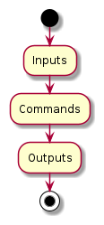
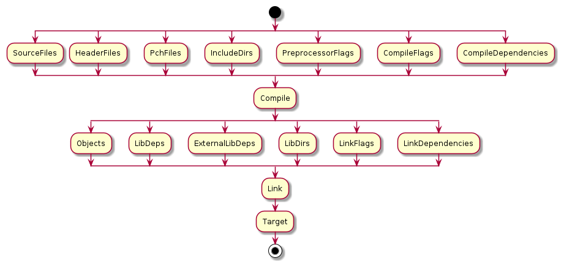

Serialization Schema¶
Path¶
namespace schema.internal;
table Path {
pathname:string (key);
last_write_timestamp:uint64;
}
Pathis used when we want to verify the physical presence of a particular fileThe
last_write_timestampis used to check if we need to rebuild the file.However we can use different rebuild strategies in the future. Ex:
last_write_timestamp:uint64can be converted tohash:string
Generator¶
namespace schema.internal;
// Each generator consists of many relational files of [input] - [output] - [commands]
table Generator {
name:string (key);
inputs:[Path];
outputs:[string];
commands:[string];
}
root_type Generator;

Target¶
namespace schema.internal;
enum TargetType : byte {
Executable,
StaticLibrary,
DynamicLibrary
}
// TODO, Check if Toolchain needs to be added to Target
table Target {
// Metadata
name:string (key);
type:TargetType;
// Input
// Files
source_files:[Path];
header_files:[Path];
pch_files:[Path];
lib_deps:[Path];
// Links
external_lib_deps:[string];
// Directories
include_dirs:[string];
lib_dirs:[string];
// Flags
preprocessor_flags:[string];
common_compile_flags:[string];
pch_compile_flags:[string];
pch_object_flags:[string];
asm_compile_flags:[string];
c_compile_flags:[string];
cpp_compile_flags:[string];
link_flags:[string];
// Additional dependencies
compile_dependencies:[Path];
link_dependencies:[Path];
// Output
// Does not need to be stored
// State
pch_compiled:bool;
target_linked:bool;
}
root_type Target;
